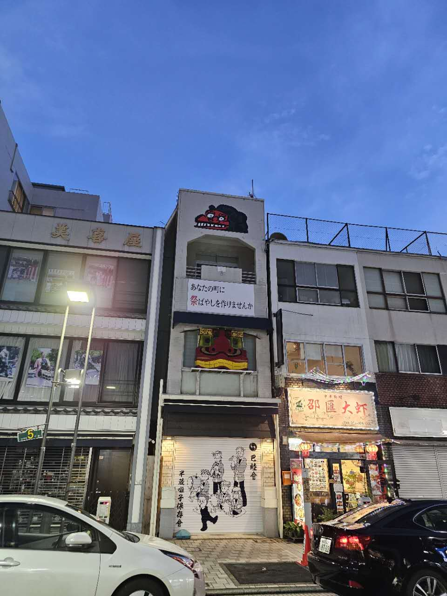
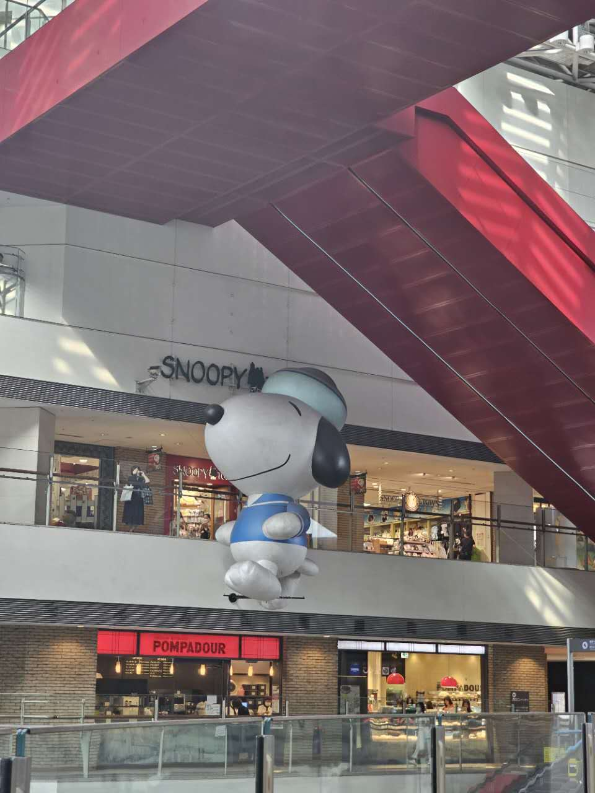

Noshiのフィールドワーク
路上観察 第一回

撮影場所：伊勢佐木町ブルース歌碑
撮影日時：2024年10月4日
撮影者：Noshi
帰宅途中に見つけた、ちょっと面白い看板。
この伝統的な日本祭用品店が、本格的な中華料理店の間に挟まれていて、そのコントラストがとても印象的。
さらに、この看板はかなり高い場所にあって、目につきにくい（宣伝看板としては少し気の毒な位置にある）。
路上観察 第二回

撮影場所：横浜クイーンズスクエア
撮影日：2024年10月11日
撮影者：Noshi
昼食を食べすぎたため、大学周辺を散歩していた際に、ショッピングモール内で巨大なスヌーピーの看板を見かけました。
年代を感じさせる商業施設の中に突如現れた巨大なキャラクターの看板は、強いインパクトがありました。（ちなみに、スヌーピーさんは少し汚れていました）